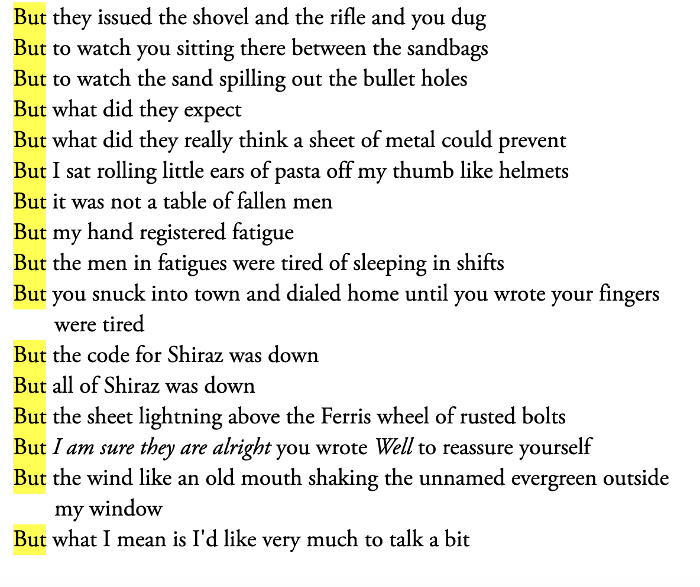

Sohini's Response
Solmaz Sharif’s “Personal Effects” is a composition of anecdotes, metaphors and repetition to convey the brutal intricacies and impacts of war. I was particularly drawn to the poem because of the unique and ever-changing structure of the poem. I felt like there was clear intention in the way the poet chose to present the poem. For example, the repetitive use of “But” in one of the stanzas. It created a rhythm that was mesmerizing but simultaneously jarring. I found that it halted me as it described a young soldier's unpreparedness and then allowed me to compare the experiences of the poet of someone uninvolved in the war. The relationship between language and war is evident in the poem. I felt that Sharif was able to convey their message in more ways than one. Beyond the content itself, the principle of impactful language permeates the poem.
